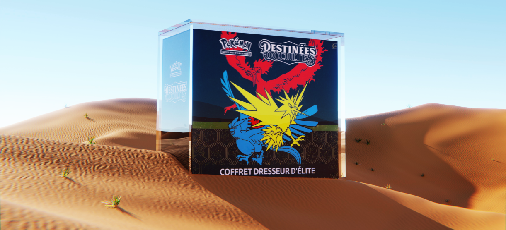

<meta charset="UTF-8">
<meta name="viewport" content="width=device-width, initial-scale=1.0">

<style>
    @import url('https://fonts.cdnfonts.com/css/sf-pro-display?styles=98774,98777,98776,98772,98773,98775,98770,98771,98769');
    #hero {
        position: relative;
        width: 100%;
        height: 40vh;
        background-color: #000;
        padding: 0;
        margin: 0;
        display: flex;
        align-items: end;
        justify-content: center;
        color: #fff;
        font-family: 'SF Pro Display', sans-serif;
        overflow: clip;
    }
    #hero .title{
        font-size: 32px;
        font-weight: 600;
        margin-bottom: 32px;
        z-index: 5;
    }
    #hero .bl{
                    position: absolute;
                    width: 196px;
                    height: 196px;
                    top: 50%;
                    background-color: #FF5CF8;
                    filter: blur(72px);
                    opacity: 0.5;
                    z-index: 0;
                }
    </style>
    <section id="hero">
        <h1 class="title">Actualité & blog</h1>
        <div class="bl"></div>
    </section>

<style>
        #section-post {
        position: relative;
        width: 100%;
        height: auto;
        padding: 0;
        margin: 40px 0;
        display: flex;
        flex-direction: column;
        align-items: center;
        justify-content: center;
        font-family: 'SF Pro Display', sans-serif;
        overflow: clip;
    }
    #section-post .tabs {
        width: 100%;
        height: auto;
        display: flex;
        align-items: center;
        justify-content: center;
    }
    #section-post .tabs .tab {
        max-width: 196px;
        max-height: 52px;
        padding: 8px 16px;
        display: flex;
        align-items: center;
        justify-content: center;
        color: #fff;
        background-color: #8D8D8D;
        margin: 0 10px;
        border-radius: 20px;
        font-size: 15px;
        cursor: pointer;
        transition: all .25s ease-in-out;
    }
    #section-post .tabs .active {
        background-color: #0048D5;
    }
    #section-post .post-container{
        width: 95%;
        display: flex;
        flex-direction: column;
        align-items: start;
        justify-content: start;
        padding: 0 12px;
        margin-top: 12px;
    }

    #section-post .hero-cover{
        width: 95%;
        height: 556px;
        border-radius: 12px;
        overflow: clip;
        margin: 40px 0;
    }
    #section-post .hero-cover img{
        width: 100%;
        height: 100%;
        object-fit: cover;
    }

    #section-post .post-container .category {
        width: 104px;
        height: auto;
        background-color: #000;
        color: #fff;
        border-radius: 20px;
        text-align: center;
        padding: 5px;
        margin: 4px 0;
    }

    #section-post .post-container .hero-title{
        font-size: 32px;
        font-weight: 600;
        letter-spacing: -0.3px;
    }

    #section-post .post-container .text-block {
        font-size: 16px;
        font-weight: normal;
        letter-spacing: 0.3px;
        max-width: 96%;
    }

    #section-post .post-container .text-list{
        font-size: 16px;
        font-weight: normal;
        letter-spacing: 0.3px;
    }

    #section-post .post-container .text-list li{
        margin-top: 20px;
    }

    @media all and (max-width:758px) { 
        #section-post .tabs {
        width: 100vw;
        height: auto;
        display: flex;
        align-items: center;
        justify-content: center;
    }
    #section-post .tabs .tab {
        max-width: 220px;
        max-height: 52px;
        padding: 8px 16px;
        display: flex;
        align-items: center;
        justify-content: center;
        color: #fff;
        background-color: #8D8D8D;
        margin: 0 8px;
        border-radius: 20px;
        font-size: 10px;
        cursor: pointer;
        transition: all .25s ease-in-out;
    }
    #section-post .tabs .active {
        background-color: #0048D5;
    }

    #section-post .hero-cover{
        width: 98%;
        height: 48vh;
        overflow: clip;
        margin: 40px 0;
    }

    #section-post .post-container .hero-title{
        font-size: 26px;
        font-weight: 600;
        letter-spacing: -0.3px;
    }

    #section-post .post-container .text-block {
        font-size: 13px;
        font-weight: normal;
        letter-spacing: 0.3px;
        max-width: 96%;
    }

    #section-post .post-container .text-list{
        font-size: 13px;
        font-weight: normal;
        letter-spacing: 0.3px;
    }
    #section-post .post-container .category {
        width: 92px;
        height: auto;
        background-color: #000;
        color: #fff;
        border-radius: 14px;
        text-align: center;
        padding: 4px;
        margin: 4px 0;
    }
    }
</style>
<section id="section-post">
        <!-- Tabs -->
        <div class="tabs">
            <div class="tab">toutes l’actualité</div>
            <div class="tab">Actualité ProKases</div>
            <div class="tab">Actualité TCG</div>
        </div>

        <div class="post-container">
                    <div class="hero-cover">
            
        </div>

        <h1 class="hero-title">Les souvenirs précieux et méritent une protection optimale</h1>

        <span class="category">Prokases</span>

        <div style="white-space: pre-line;" class="text-block">
        La préservation des cartes à collectionner est une préoccupation majeure pour tout amateur passionné. Les souvenirs précieux et les œuvres d'art uniques méritent une protection optimale, c'est là que l'importance de l'anti-UV entre en jeu. Ces protections spéciales agissent comme une barrière efficace contre les rayons ultraviolets nocifs, qu'ils proviennent de la lumière naturelle du soleil ou de l'éclairage artificiel.&NewLine;&NewLine; 
        Les rayons UV peuvent causer des dommages irréversibles aux couleurs éclatantes et à la qualité globale des cartes à collectionner. L'utilisation de protections dotées de filtres anti-UV aide à prévenir la décoloration, le jaunissement et la détérioration prématurée. En investissant dans ces protections, les collectionneurs s'assurent que leurs trésors restent intacts, préservant ainsi la valeur sentimentale et monétaire associée à chaque carte.&NewLine;&NewLine; 
        Au-delà de la simple préservation, l'anti-UV permet de prolonger la durée de vie des cartes, garantissant qu'elles restent aussi éclatantes et attrayantes qu'au premier jour. Cela contribue à maintenir l'esthétique visuelle des collections, créant une expérience visuelle agréable pour les collectionneurs et les admirateurs.&NewLine;&NewLine; 
        En somme, l'anti-UV n'est pas simplement une option, mais une nécessité pour tout amateur sérieux de cartes à collectionner. C'est la clé pour préserver la beauté et la valeur des trésors collectionnés, assurant ainsi que chaque carte raconte son histoire de manière éclatante et durable.
    </div>

    <div class="hero-cover">
        
    </div>

        <ol class="text-list">
        <li>Stockage approprié : Utilisez des pochettes et des classeurs spécialement conçus pour les cartes à collectionner. Assurez-vous que le stockage est à l'abri de la lumière directe du soleil, de l'humidité et de la chaleur pour prévenir la dégradation. </li>
        <li>Protège-cartes avec filtre UV : Choisissez des protège-cartes équipés de filtres anti-UV. Ces filtres aident à prévenir la décoloration des couleurs et la détérioration causée par les rayons ultraviolets.</li>
        <li>Manipulation soigneuse : Manipulez les cartes avec précaution en évitant tout contact direct avec les doigts. Utilisez des gants en coton propres si nécessaire pour réduire les risques de transfert d'huiles ou de saletés.</li> 
        <li>Environnement stable : Maintenez un environnement stable en termes de température et d'humidité. Les variations extrêmes peuvent endommager les cartes, alors essayez de stocker votre collection dans un endroit sec et frais.</li>
        <li>Inventaire et assurance : Tenez un inventaire détaillé de votre collection, y compris des informations sur l'état de chaque carte. Considérez également la possibilité de souscrire une assurance pour protéger votre investissement en cas de vol, d'incendie ou d'autres incidents imprévus.</li> 
        </ol>

        </div>


            <!-- Toggle script -->
    <script>
        var tabs = document.getElementsByClassName("tab");
        tabs[0].classList.add('active');

        for (var i = 0; i < tabs.length; i++) {
            tabs[i].addEventListener("click", function() {
                for (var j = 0; j < tabs.length; j++) {
                    tabs[j].classList.remove("active");
                }
                this.classList.add("active");
            });
        }
    </script>
</section>